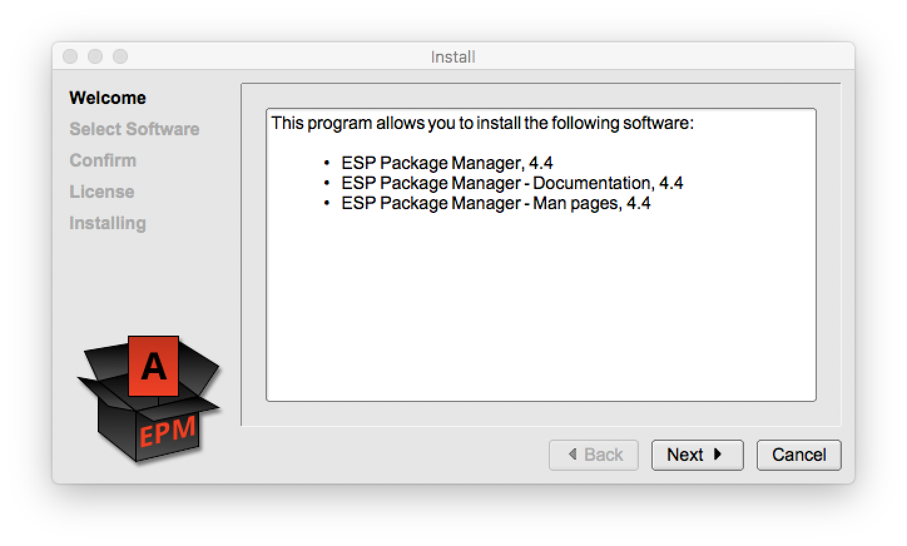

MICHAEL R. SWEET
This book may be redistributed and/or modified under the terms of version 2 of the GNU General Public License as published by the Free Software Foundation.
This book is distributed in the hope that it will be useful, but WITHOUT ANY WARRANTY; without even the implied warranty of MERCHANTABILITY or FITNESS FOR A PARTICULAR PURPOSE. See the GNU General Public License for more details.
You should have received a copy of the GNU General Public License along with this program; if not, write to the Free Software Foundation, Inc., 59 Temple Place - Suite 330, Boston, MA 02111-1307, USA.
International Standard Book Number: 978-1-4116-8913-8
First Printing: April 2006
Second Printing: December 2010
Third Printing: September 2015
Fourth Printing: October 2017
This book provides a tutorial and reference for the ESP Package Manager ("EPM") software, version 4.4, and is organized into the following chapters and appendices:
epm
epm(1)
The following abbreviations are used throughout this book:
I've done my best to ensure that this book is both accurate and clear. If you find errors or have a suggestion for improving the book, please file a bug at:
https://github.com/michaelrsweet/epm/issues
I'd like to thank the following people for their contributions to EPM:
This chapter provides an introduction to the ESP Package Manager ("EPM").
Software distribution under UNIX/Linux can be a challenge, especially if you ship software for more than one operating system. Every operating system provides its own software packaging tools and each has unique requirements or implications for the software development environment.
The ESP Package Manager ("EPM") is one solution to this problem. Besides its own "portable" distribution format, EPM also supports the generation of several vendor-specific formats. This allows you to build software distribution files for almost any operating system from the same sources.
When Easy Software Products was founded by me in 1993, the company originally shipped software only for the SGI IRIX operating system. Support was added for Solaris in 1997, followed quickly by HP-UX in 1998.
Each new operating system and supported processor required a new set of packaging files. While this worked, it also meant keeping all of the packaging files synchronized manually. Needless to say, this process was far from perfect and there was more than one distribution that was not identical on all operating systems.
As I began developing CUPS ( https://www.cups.org/) in 1997, the initial goal was to add support for two additional operating systems: Linux and Compaq Tru64 UNIX. If I was to avoid the mistakes of the past, I clearly had to change how software distributions were produced.
The first version of EPM was released in 1999 and supported so-called "portable" software distributions that were not tied to any particular operating system or packaging software. Due to popular demand, we added support for vendor-specific packaging formats in the second major release of EPM, allowing the generation of portable or "native" distributions from one program and one set of software distribution files.
As I looked for a solution to our problem, we naturally investigated the existing open-source packaging systems. Under Linux, I looked at the Red Hat Package Manager ("RPM") and Debian packaging software ("dpkg" and "dselect"). For the commercial UNIX's I looked at the vendor-supplied packaging systems. Table 1.1 shows the results of my investigation.
| Format | Operating Systems1 | Binaries | Cross- Platform | Patches | Up- grades | Con- flicts | Re- quires | Re- places | Config Files | Map Files | Un- install |
|---|---|---|---|---|---|---|---|---|---|---|---|
| installp | AIX | Yes | No | No | No | Yes | Yes | No | No | No | Yes |
| pkg_add | FreeBSD | Yes | Yes2 | No | No | No | No | No | No | No | Yes |
| pkg_add |
NetBSD
OpenBSD | Yes | Yes2 | No | No | Yes | Yes | No | No | No | Yes |
| dpkg |
Corel Linux
Debian GNU/Linux | Yes | Yes2 | No | Yes | Yes | Yes | Yes | Yes | No | Yes |
| depot | HP-UX | Yes | No | Yes | Yes | Yes | Yes | No | Yes | Yes | Yes |
| inst | IRIX | Yes | No | Yes | Yes | Yes | Yes | Yes | Yes | Yes | Yes |
| Install.app | macOS | Yes | No | No | Yes | No | No | No | No | No | No |
| pkgadd | Solaris | Yes | No | Yes | No | Yes | Yes | No | Yes | Yes | Yes |
| rpm |
Mandrake
Red Hat SuSE TurboLinux | Yes | Yes2 | No | Yes | Yes | Yes | No | Yes | No | Yes |
| setld | Tru64 UNIX | Yes | No | No | No | Yes | Yes | No | No | No | Yes |
| slackware | Slackware Linux | Yes | No | No | No | Yes | Yes | No | No | No | Yes |
As you can see, none of the formats supported every feature we were looking for. One common fault of all these formats is that they do not support a common software specification file format. That is, making a Debian software distribution requires significantly different support files than required for a Solaris pkg distribution. This makes it extremely difficult to manage distributions for multiple operating systems.
All of the package formats support binary distributions. The RPM and
Debian formats also support source distributions that specifically
allow for recompilation and installation. Only the commercial UNIX
formats support patch distributions - you have to completely upgrade a
software package with RPM and Debian. All but the Solaris pkg
format allow you to upgrade a package without removing the old version
first.
When building the software packages, RPM and Debian force you to
create the actual directories, copy the files to those directories, and
set the ownerships and permissions. You essentially are creating a
directory for your software that can be archived in the corresponding
package format. To ensure that all file permissions and ownerships are
correct, you must build the distribution as the root user or use the
fakeroot software, introducing potential security risks and
violating many corporate security policies. It can also make building
distributions difficult when dynamic data such as changing data files
or databases is involved.
The commercial UNIX formats use software list files that map source files to the correct directories and permissions. This allows for easier delivery of dynamic data, configuration management of what each distribution actually contains, and eliminates security issues with special permissions and building distributions as the root user. Using the proprietary format also has the added benefit of allowing for software patches and using the familiar software installation tools for that operating system. The primary disadvantage is that the same distributions and packaging software cannot be used on other operating systems.
EPM was designed from the beginning to build binary software distributions using a common software specification format. The same distribution files work for all operating systems and all distribution formats. Supporting source code distributions was not a goal since most RPM and Debian source distributions are little more than wrapping around a compressed tar file containing the source files and a configure script.
Over the years, additional features have made their way into EPM to support more advanced software packages. Whenever possible, EPM emulates a feature if the vendor package format does not support it natively.
The EPM project page provides access to the current software, documentation, and mailing list for EPM:
https://michaelrsweet.github.io/epm
The EPM source code can be downloaded in compressed tar files or via the popular Subversion software. Please see the EPM project page for complete instructions.
This chapter shows how to configure, build, and install the ESP Package Manager.
EPM requires very little pre-installed software to work. Most items
will likely be provided as part of your OS. Your development system
will need a C compiler, the make(1) program (GNU, BSD, and
most vendor make programs should work), a POSIX shell
(Bourne, Korn, Bash, etc.), and gzip(1).
The optional graphical setup program requires a C++ compiler, the FLTK library, version 1.1.x or 1.3.x, and (for UNIX/Linux) the X11 libraries. FLTK is available at the following URL:
http://www.fltk.org/
Your end-user systems will require a POSIX shell, the df(1)
program, the tar(1) program, and the gzip(1)
program to install portable distributions. All but the last are
standard items, and most vendors include gzip as well.
EPM can also generate vendor-specific distributions. These require
the particular vendor tool, such as rpm(8) and
dpkg(8), to generate the software distribution on the development
system and load the software distribution on the end-user system.
EPM uses GNU autoconf(1) to configure itself for your
system. The configure script is used to configure the EPM
software, as follows:
./configure ENTER
If the configure script is unable to determine the name
of your C or C++ compiler, set the CC and CXX
environment variables to point to the C and C++ compiler programs,
respectively. You can set these variables using the following commands
in the Bourne, Korn, or Bash shells:
export CC=/foo/bar/gcc ENTER export CXX=/foo/bar/gcc ENTER
If you are using C shell or tcsh, use the following commands instead:
setenv CC /foo/bar/gcc ENTER setenv CXX /foo/bar/gcc ENTER
Run the configure script again to use the new commands.
The default installation prefix is /usr/local, which will
place the EPM programs in /usr/local/bin, the setup GUI in
/usr/local/lib/epm, and the man pages in
/usr/local/share/man. Use the --prefix option to
relocate these files to another directory:
./configure --prefix=/example/path ENTER
The configure script also accepts the --bindir
, --libdir, and --mandir options to relocate
each directory separately, as follows:
./configure --bindir=/example/path/bin --libdir=/example/path/lib \
--mandir=/example/path/share/man ENTER
The setup GUI requires the FLTK library. The configure script will
look for the fltk-config utility that comes with FLTK. Set
the FLTKCONFIG environment variable to the full path of this utility if
it cannot be found in the current path:
setenv FLTKCONFIG /foo/bar/bin/fltk-config ENTER
or:
FLTKCONFIG=/foo/bar/bin/fltk-config ENTER export FLTKCONFIG
Once you have configured the software, type the following command to compile it:
make ENTER
Compilation should take a few minutes at most. Then type the following command to determine if the software compiled successfully:
make test ENTER Portable distribution build test PASSED. Native distribution build test PASSED.
The test target builds a portable and native
distribution of EPM and reports if the two distributions were generated
successfully.
Now that you have compiled and tested the software, you can install
it using the make command or one of the distributions that
was created. You should be logged in as the super-user unless you
specified installation directories for which you have write permission.
The su(8) command is usually sufficient to install
software:
su ENTER
Operating systems such as macOS do not enable the root account by
default. The sudo(8) command is used instead:
sudo installation command ENTER
make CommandType the following command to install the EPM software using the
make command:
make install ENTER Installing EPM setup in /usr/local/lib/epm Installing EPM programs in /usr/local/bin Installing EPM manpages in /usr/local/share/man/man1 Installing EPM documentation in /usr/local/share/doc/epm
Use the sudo command to install on macOS:
sudo make install ENTER Installing EPM setup in /usr/local/lib/epm Installing EPM programs in /usr/local/bin Installing EPM manpages in /usr/local/share/man/man1 Installing EPM documentation in /usr/local/share/doc/epm
The portable distribution can be found in a subdirectory named using the operating system, version, and architecture. For example, the subdirectory for a Linux 2.4.x system on an Intel-based system would be linux-2.4-intel. The subdirectory name is built from the following template:
os-major.minor-architecture
The os name is the common name for the operating system.
Table 2.1 lists the abbreviations for most
operating systems.
The major.minor string is the operating system version
number. Any patch revision information is stripped from the version
number, as are leading characters before the major version number. For
example, HP-UX version B.11.11 will result in a version number string
of 11.11.
| Operating System | Name |
|---|---|
| AIX | aix |
| Compaq Tru64 UNIX
Digital UNIX OSF/1 | tru64 |
| FreeBSD | freebsd |
| HP-UX | hpux |
| IRIX | irix |
| Linux | linux |
| macOS | osx |
| NetBSD | netbsd |
| OpenBSD | openbsd |
| Solaris | solaris |
| Processor(s) | Abbreviation |
|---|---|
| Compaq Alpha | alpha |
| HP Precision Architecture | hppa |
| INTEL 80x86 | intel |
| INTEL 80x86 w/64bit Extensions | x86_64 |
| MIPS RISC | mips |
| IBM Power PC | powerpc |
| SPARC
MicroSPARC UltraSPARC | sparc |
The architecture string identifies the target processor.
Table 2.2 lists the supported processors.
Once you have determined the subdirectory containing the distribution, type the following commands to install EPM from the portable distribution:
cd os-major.minor-architecture ENTER ./epm.install ENTER
The software will be installed after answering a few yes/no questions.
The test target also builds a distribution in the native
operating system format, if supported. Table 2.3
lists the native formats for each supported operating system and the
command to run to install the software.
| Operating System | Format | Command |
|---|---|---|
| AIX | aix | installp -d
directory epm |
| Compaq Tru64 UNIX
Digital UNIX OSF/1 | setld | setld -a
directory |
| FreeBSD
NetBSD OpenBSD | bsd | cd
directory
|
| HP-UX | depot | swinstall
-f directory |
| IRIX | inst | swmgr -f
directory |
| Linux | rpm | rpm -i
directory/epm-4.1.rpm |
| macOS | osx | open
directory/ |
| Solaris | pkg | pkgadd -d
directory epm |
This chapter describes how to use EPM to package your own software packages.
EPM reads one or more software "list" files that describe a single software package. Each list file contains one or more lines of ASCII text containing product or file information.
Comments lines start with the # character, directive
lines start with the % character, variables lines start
with the $ character, and file, directory, init script,
and symlink lines start with a letter.
Every list file needs to define the product name, copyright, description, license, README file, vendor, and version:
%product Kung Foo Firewall %copyright 1999-2005 by Foo Industries, All Rights Reserved. %vendor Foo Industries %license COPYING %readme README %description Kung Foo firewall software for your firewall. %version 1.2.3p4 1020304
The %license and %readme directives specify
files for the license agreement and README files for the package,
respectively.
The %product, %copyright, %vendor
, and %description directives take text directly from the
line.
The %version directive specifies the version numbers of
the package. The first number is the human-readable version number,
while the second number is the integer version number. If you omit the
integer version number, EPM will calculate one for you.
Each file in the distribution is listed on a line starting with a letter. The format of all lines is:
type mode owner group destination source options
Regular files use the letter f for the type field:
f 755 root sys /usr/bin/foo foo
Configuration files use the letter c for the type field:
c 644 root sys /etc/foo.conf foo.conf
Directories use the letter d for the type field and use
a source path of "-":
d 755 root sys /var/spool/foo -
Finally, symbolic links use the letter l (lowercase L)
for the type field:
l 000 root sys /usr/bin/foobar foo
The source field specifies the file to link to and can be a relative path.
Wildcard patterns can be used in the source field to include multiple files on a single line:
f 0444 root sys /usr/share/doc/foo *.html
Subpackages are optional parts of your software package. For example, if your package includes developer files, you might provide them as a subpackage so that users that will not be developing add-ons to your software can omit them from the installation.
| Note:
Subpackages are implemented as native subsets of the main package for the AIX, HPUX, IRIX, Solaris, and Tru64 formats and as separate packages that depend on the main (parent) package for all other formats. |
To define a subpackage, use the %subpackage directive
followed by a %description directive:
%subpackage foo %description One-Line Description of Foo
Files, scripts, and dependencies that follow the %subpackage
directive are treated as part of that subpackage. Specifying the
%subpackage directive with no name returns processing to the main
(parent) package.
You can alternate between subpackages as many times as you like:
%description Main package description f 0755 /usr/bin/bar bar %subpackage foo %description Foo programs f 0755 /usr/bin/foo foo %requires bla %subpackage f 0644 /usr/share/man/man1/bar.1 %subpackage foo f 0644 /usr/share/man/man1/foo.1
The above example creates a package containing the "bar" program and
man page with a subpackage containing the "foo" program and man page.
The "foo" subpackage depends both on the main package (implicit
%requires) and another package called "bla".
The epm(1) program is used to build software package
from list files. To build a portable software package for an
application called "foo", type the following command:
epm foo ENTER
If your application uses a different base name than the list file, you can specify the list filename on the command-line as well:
epm foo bar.list ENTER
Once you have created the software package, you can install it. Portable packages include an installation script called product.install, where "product" is the name of the package:
cd os-release-arch ENTER ./product.install ENTER
After answering a few yes/no questions, the software will be
installed. To bypass the questions, run the script with the now
argument:
cd os-release-arch ENTER ./product.install now ENTER
Figure 3.1: The EPM Setup GUI

EPM also provides an optional graphical setup program (
Figure 3.1). To include the setup program in your distributions,
create a product logo image in GIF or XPM format and use the
--setup-image option when creating your distribution:
epm --setup-image foo.xpm foo ENTER
This option is only supported when creating for portable and macOS software packages.
EPM can also produce vendor-specific packages using the -f
option:
epm -f format foo bar.list ENTER
The format option can be one of the following keywords:
aix - AIX software packages.bsd - FreeBSD, NetBSD, or OpenBSD software packages.depot or swinstall - HP-UX software
packages.dpkg - Debian software packages.inst or tardist - IRIX software packages.native - "Native" software packages (RPM, INST, DEPOT,
PKG, etc.) for the platform.osx - macOS software packages.pkg - Solaris software packages.portable - Portable software packages (default).rpm - Red Hat software packages.setld - Tru64 (setld) software packages.slackware - Slackware software packages.Everything in the software list file stays the same - you just use
the -f option to select the format. For example, to build
an RPM distribution of EPM, type:
epm -f rpm epm
The result will be one or more RPM package files instead of the portable package files.
EPM creates the package files in the output directory. As mentioned in Chapter 1, "Installing Using the Portable Distribution", the default output directory is based on the operating system name, version, and architecture. Each package format will leave different files in the output directory.
AIX packages are contained in a file called name.bff, where "name" is the product/package name you supplied on the command-line.
BSD packages are contained in a file called name.tgz, where "name" is the product/package name you supplied on the command-line.
HP-UX packages are contained in two files called name.depot.gz
and name.depot.tgz, where "name" is the product/package name
you supplied on the command-line. The name.depot.gz file can
be supplied directly to the swinstall(1m) command, while
the name.depot.tgz file contains a compressed tar(1)
archive that can be used to install the software from CD-ROM or network
filesystem.
Debian packages are contained in a file called name.deb or
name.deb.tgz when there are subpackages, where "name" is the
product/package name you supplied on the command-line. The
name.deb.tgz file contains a compressed tar archive
containing name.deb and name-subpackage.deb files
that can be installed from CD-ROM, disk, or network filesystem.
IRIX packages are contained in a file called name.tardist, where "name" is the product/package name you supplied on the command-line.
macOS packages are contained in a file called name.dmg, where "name" is the product/package name you supplied on the command-line.
RPM packages are contained in a file called name.rpm or
name.rpm.tgz when there are subpackages, where "name" is the
product/package name you supplied on the command-line. The
name.rpm.tgz file contains a compressed tar archive
containing name.rpm and name-subpackage.rpm files
that can be installed from CD-ROM, disk, or network filesystem.
Slackware packages are contained in a file called name.tgz , where "name" is the product/package name you supplied on the command-line.
Solaris packages are contained in two files called name.pkg.gz
and name.pkg.tgz, where "name" is the product/package name
you supplied on the command-line. The name.pkg.gz file is a
compressed package file that can be used directly with the
pkgadd(1m) command, while the name.pkg.tgz file is a
compressed tar archive that can be used to install the
software from CD-ROM, disk, or network filesystem.
Tru64 packages are contained in a file called name.tar.gz, where "name" is the product/package name you supplied on the command-line.
This chapter describes the advanced packaging features of EPM.
The %include directive includes another list file:
%include filename
Includes can usually be nested up to 250 levels depending on the host operating system and libraries.
EPM supports four types of dependencies in list files:
%incompat, %provides, %replaces, and
%requires. Table 4.1 shows the level of
support for each package format.
| Format | %incompat | %provides | %replaces | %requires |
|---|---|---|---|---|
| aix | No | No | Yes | Yes |
| bsd | Yes | No | No | Yes |
| deb | Yes | Yes1 | Yes | Yes |
| inst | Yes | No | Yes | Yes |
| osx | No | No | No | No |
| pkg | Yes | No | No | Yes |
| portable | Yes | Yes | Yes | Yes |
| rpm | Yes | Yes | No | Yes |
| setld | No | No | No | No |
| slackware | No | No | No | No |
| swinstall | No | No | Yes | Yes |
%provides dependencies.
Software conflicts and requirements are specified using the
%incompat and %requires directives.
If your software replaces another package, you can specify that using
the %replaces directive. %replaces is
silently mapped to %incompat when the package format does
not support package replacement.
If your package provides certain functionality associated with a
standard name, the %provides directive can be used.
Dependencies are specified using the package name and optionally the lower and upper version numbers:
%requires foobar %requires foobar 1.0 %incompat foobar 0.9 %replaces foobar %replaces foobar 1.2 3.4 %provides foobar
or the filename:
%requires /usr/lib/libfoobar.so %incompat /usr/lib/libfoobar.so.1.2
Package dependencies are currently enforced only for the same package format, so a portable distribution that requires package "foobar" will only look for an installed "foobar" package in portable format.
Filename dependencies are only supported by the Debian, portable, and RPM distribution formats.
Bourne shell script commands can be executed before or after installation, patching, or removal of the software. Table 4.2 shows the support for scripts in each package format.
The %preinstall and %postinstall directives
specify commands to be run before and after installation, respectively:
%preinstall echo Command before installing %postinstall echo Command after installing
Similarly, the %prepatch and %postpatch
directives specify commands to be executed before and after patching
the software:
%prepatch echo Command before patching %postpatch echo Command after patching
Finally, the %preremove and %postremove
directives specify commands that are run before and after removal of
the software:
%preremove echo Command before removing %postremove echo Command after removing
| Format | %preinstall | %postinstall | %prepatch | %postpatch | %preremove | %postremove |
|---|---|---|---|---|---|---|
| aix | Yes | Yes | No | No | Yes | Yes |
| bsd | No | Yes | No | No | Yes | No |
| deb | Yes | Yes | No | No | Yes | Yes |
| inst | Yes | Yes | No | No | Yes | Yes |
| osx | Yes | Yes | No | No | No | No |
| pkg | Yes | Yes | No | No | Yes | Yes |
| portable | Yes | Yes | Yes | Yes | Yes | Yes |
| rpm | Yes | Yes | No | No | Yes | Yes |
| setld | Yes | Yes | No | No | Yes | Yes |
| slackware | No | Yes | No | No | No | No |
| swinstall | Yes | Yes | No | No | Yes | Yes |
To include an external script file, use the <filename
notation:
%postinstall <filename
To include multiple lines directly, use the <<string
notation (a.k.a. a "here" document):
%postinstall <<EOF echo Command before installing /usr/bin/foo EOF
Note that all commands specified in the list file will use the
variable expansion provided by EPM, so be sure to quote any dollar sign
($) characters in your commands. For example, "$foo" is
replaced by the value of "foo", but "$$foo" becomes "$foo".
The %system directive can match or not match specific
operating system names or versions. The operating system name is the
name reported by uname in lowercase, while the operating
system version is the major and minor version number reported by
uname -r:
%system irix
%system linux-2.0
%system !irix !linux-2.0
The special name all is used to match all operating
systems:
%system all
For format-specific files, the %format directive can be
used:
%format rpm
%format !rpm
%format all
The %arch directive can match or not match specific
architectures. The architecture name is the name reported by
uname -m; "arm" is a synonym for "armv6", "armv7", and "armv8",
"intel" is a synonym for "i386", "i486", "i586", and "i686", and
"powerpc" is a synonym for "ppc":
%arch intel
%arch armv6
%system !powerpc
The special name all is used to match all architectures:
%arch all
Finally, EPM can conditionally include lines using the %if
, %elseif, %ifdef, %elseifdef,
%else, and %endif directives.
%if directives include the text that follows if the
named variable(s) are defined to a non-empty string:
%if FOO f 755 root sys /usr/bin/foo foo %elseif BAR f 755 root sys /usr/bin/bar bar %endif
%ifdef directives only include the text if the named
variable(s) are defined to any value:
%ifdef OSTYPE f 755 root sys /usr/bin/program program-$OSTYPE %else f 755 root sys /usr/bin/program program.sh %endif
The nostrip() option can be included at the end of a
file line to prevent EPM from stripping the symbols and debugging
information from a file:
f 755 root sys /usr/lib/libfoo.so libfoo.so nostrip()
EPM supports portable software patch distributions which contain only the differences between the original and patch release. Patch files are specified using uppercase letters for the affected files. In the following example, the files /usr/bin/bar and /etc/foo.conf are marked as changed since the original release:
f 755 root sys /usr/bin/foo foo F 755 root sys /usr/bin/bar bar f 755 root sys /usr/share/man/man1/foo.1 foo.man f 755 root sys /usr/share/man/man1/bar.1 bar.man C 644 root sys /etc/foo.conf foo.conf
EPM imports the current environment variables for use in your list file. You can also define new variable in the list file or on the command-line when running EPM.
Variables are defined by starting the line with the dollar sign (
$) followed by the name and value:
$name=value
$prefix=/usr
$exec_prefix=${prefix}
$bindir=$exec_prefix/bin
Variable substitution is performed when the variable is defined, so be careful with the ordering of your variable definitions.
Also, any variables you specify in your list file will be overridden
by variables defined on the command-line or in your environment, just
like with make. This can be a useful feature or a curse,
depending on your choice of variable names.
As you can see, variables are referenced using the dollar sign (
$). As with most shells, variable names can be surrounded by
curly braces (${variable}) to explicitly delimit the name.
If you need to insert a $ in a filename or a script, use
$$:
%install echo Enter your name: %install read $$name %install echo Your name is $$name.
Initialization scripts are generally portable between platforms, however the location of initialization scripts varies greatly.
The i file type can be used to specify and init script
that is to be installed on the system. EPM will then determine the
appropriate init file directories to use and create any required
symbolic links to support the init script:
i 755 root sys foo foo.sh
The previous example creates an init script named foo on the end-user system and will create symbolic links to run levels 0, 2, 3, and 5 as needed, using a sequence number of 00 (or 000) for the shutdown script and 99 (or 999) for the startup script.
To specify run levels and sequence numbers, use the runlevel()
, start(), and stop() options:
i 755 root sys foo foo.sh "runlevel(02) start(50) stop(30)"
Sometimes you need to include format-specific package data such as
keywords, signing keys, and response data. The %literal(section)
directive adds format-specific data to the packages you create. Literal
data is currently only supported for RPM and PKG packages.
Debian packages have control files that provide metadata for each
package. The %literal(control) directive can be used to
provide this metadata:
%literal(control) <<EOF Section: misc Priority: extra EOF
PKG packages support request files that are used to do batch
installations when installation commands require user input. The
%literal(request) directive can be used to provide this user
input:
%literal(request) <<EOF John Doe 1 Any Lane Forest Lawn, OH 12345 EOF
RPM packages support numerous attributes in the "spec" file that
control how the package is created and what metadata is included with
the package. The %literal(spec) directive can be used to
provide attributes for the spec file:
%literal(spec) <<EOF %changelog * Tue Aug 26 2008 John Doe <johndoe@domain.com> - Added new feature "bar" * Fri Aug 1 2008 John Doe <johndoe@domain.com> - Added new feature "foo" EOF
This chapter shows how the EPM and CUPS software is packaged using EPM list files. The EPM list file example highlights the basic features of EPM, while the CUPS list file example shows the more advanced features of EPM.
The EPM software comes with its own autoconf-generated epm.list file that is used to package and test EPM. The EPM package consists of the main package plus a "documentation" subpackage for the documentation files and a "man" subpackage for the man pages.
We start by defining variables for each of the autoconf directory variables:
$prefix=/usr
$exec_prefix=/usr
$bindir=${exec_prefix}/bin
$datadir=/usr/share
$docdir=${datadir}/doc/epm
$libdir=/usr/lib
$mandir=/usr/share/man
$srcdir=.
Then we provide the general product information that is required for
all packages; notice the use of ${srcdir} to reference the
COPYING and README files:
%product ESP Package Manager
%copyright 1999-2014 by Michael R Sweet, All Rights Reserved.
%vendor Michael R Sweet
%license ${srcdir}/COPYING
%readme ${srcdir}/README.md
%description Universal software packaging tool for UNIX.
%version 4.4 440
After the product information, we include all of the non-GUI files that are part of EPM:
# Executables
%system all
f 0555 root sys ${bindir}/epm epm
f 0555 root sys ${bindir}/epminstall epminstall
f 0555 root sys ${bindir}/mkepmlist mkepmlist
# Documentation
%subpackage documentation
%description Documentation for EPM
f 0444 root sys ${docdir}/README $srcdir/README.md
f 0444 root sys ${docdir}/COPYING $srcdir/COPYING
f 0444 root sys ${docdir}/epm-book.html $srcdir/doc/epm-book.html
# Man pages
%subpackage man
%description Man pages for EPM
f 0444 root sys ${mandir}/man1/epm.1 $srcdir/doc/epm.man
f 0444 root sys ${mandir}/man1/epminstall.1 $srcdir/doc/epminstall.man
f 0444 root sys ${mandir}/man1/mkepmlist.1 $srcdir/doc/mkepmlist.man
f 0444 root sys ${mandir}/man5/epm.list.5 $srcdir/doc/epm.list.man
Finally, we conditionally include the GUI files depending on the
state of a variable called GUIS:
# GUI files...
$GUIS=setup uninst
%if GUIS
%subpackage
f 0555 root sys ${libdir}/epm/setup setup
f 0555 root sys ${libdir}/epm/uninst uninst
%system macos
f 0444 root sys ${datadir}/epm/default.icns default.icns
%system all
%subpackage man
f 0444 root sys ${mandir}/man1/setup.1 $srcdir/doc/setup.man
f 0444 root sys ${mandir}/man5/setup.types.5 $srcdir/doc/setup.types.man
%endif
GNU GENERAL PUBLIC LICENSE
Version 2, June 1991
Copyright (C) 1989, 1991 Free Software Foundation,
Inc.
59 Temple Place - Suite 330, Boston, MA 02111-1307, USA
Everyone is permitted to copy and distribute verbatim copies of
this license document, but changing it is not allowed.
GNU GENERAL PUBLIC LICENSE
TERMS AND CONDITIONS FOR COPYING, DISTRIBUTION AND MODIFICATION
0. This License applies to any program or other work which contains a notice placed by the copyright holder saying it may be distributed under the terms of this General Public License. The "Program", below, refers to any such program or work, and a "work based on the Program" means either the Program or any derivative work under copyright law: that is to say, a work containing the Program or a portion of it, either verbatim or with modifications and/or translated into another language. (Hereinafter, translation is included without limitation in the term "modification".) Each licensee is addressed as "you".
Activities other than copying, distribution and modification are not covered by this License; they are outside its scope. The act of running the Program is not restricted, and the output from the Program is covered only if its contents constitute a work based on the Program (independent of having been made by running the Program). Whether that is true depends on what the Program does.
1. You may copy and distribute verbatim copies of the Program's source code as you receive it, in any medium, provided that you conspicuously and appropriately publish on each copy an appropriate copyright notice and disclaimer of warranty; keep intact all the notices that refer to this License and to the absence of any warranty; and give any other recipients of the Program a copy of this License along with the Program.
You may charge a fee for the physical act of transferring a copy, and you may at your option offer warranty protection in exchange for a fee.
2. You may modify your copy or copies of the Program or any portion of it, thus forming a work based on the Program, and copy and distribute such modifications or work under the terms of Section 1 above, provided that you also meet all of these conditions:
These requirements apply to the modified work as a whole. If identifiable sections of that work are not derived from the Program, and can be reasonably considered independent and separate works in themselves, then this License, and its terms, do not apply to those sections when you distribute them as separate works. But when you distribute the same sections as part of a whole which is a work based on the Program, the distribution of the whole must be on the terms of this License, whose permissions for other licensees extend to the entire whole, and thus to each and every part regardless of who wrote it.
Thus, it is not the intent of this section to claim rights or contest your rights to work written entirely by you; rather, the intent is to exercise the right to control the distribution of derivative or collective works based on the Program.
In addition, mere aggregation of another work not based on the Program with the Program (or with a work based on the Program) on a volume of a storage or distribution medium does not bring the other work under the scope of this License.
3. You may copy and distribute the Program (or a work based on it, under Section 2) in object code or executable form under the terms of Sections 1 and 2 above provided that you also do one of the following:
The source code for a work means the preferred form of the work for making modifications to it. For an executable work, complete source code means all the source code for all modules it contains, plus any associated interface definition files, plus the scripts used to control compilation and installation of the executable. However, as a special exception, the source code distributed need not include anything that is normally distributed (in either source or binary form) with the major components (compiler, kernel, and so on) of the operating system on which the executable runs, unless that component itself accompanies the executable.
If distribution of executable or object code is made by offering access to copy from a designated place, then offering equivalent access to copy the source code from the same place counts as distribution of the source code, even though third parties are not compelled to copy the source along with the object code.
4. You may not copy, modify, sublicense, or distribute the Program except as expressly provided under this License. Any attempt otherwise to copy, modify, sublicense or distribute the Program is void, and will automatically terminate your rights under this License. However, parties who have received copies, or rights, from you under this License will not have their licenses terminated so long as such parties remain in full compliance.
5. You are not required to accept this License, since you have not signed it. However, nothing else grants you permission to modify or distribute the Program or its derivative works. These actions are prohibited by law if you do not accept this License. Therefore, by modifying or distributing the Program (or any work based on the Program), you indicate your acceptance of this License to do so, and all its terms and conditions for copying, distributing or modifying the Program or works based on it.
6. Each time you redistribute the Program (or any work based on the Program), the recipient automatically receives a license from the original licensor to copy, distribute or modify the Program subject to these terms and conditions. You may not impose any further restrictions on the recipients' exercise of the rights granted herein. You are not responsible for enforcing compliance by third parties to this License.
7. If, as a consequence of a court judgment or allegation of patent infringement or for any other reason (not limited to patent issues), conditions are imposed on you (whether by court order, agreement or otherwise) that contradict the conditions of this License, they do not excuse you from the conditions of this License. If you cannot distribute so as to satisfy simultaneously your obligations under this License and any other pertinent obligations, then as a consequence you may not distribute the Program at all. For example, if a patent license would not permit royalty-free redistribution of the Program by all those who receive copies directly or indirectly through you, then the only way you could satisfy both it and this License would be to refrain entirely from distribution of the Program.
If any portion of this section is held invalid or unenforceable under any particular circumstance, the balance of the section is intended to apply and the section as a whole is intended to apply in other circumstances.
It is not the purpose of this section to induce you to infringe any patents or other property right claims or to contest validity of any such claims; this section has the sole purpose of protecting the integrity of the free software distribution system, which is implemented by public license practices. Many people have made generous contributions to the wide range of software distributed through that system in reliance on consistent application of that system; it is up to the author/donor to decide if he or she is willing to distribute software through any other system and a licensee cannot impose that choice.
This section is intended to make thoroughly clear what is believed to be a consequence of the rest of this License.
8. If the distribution and/or use of the Program is restricted in certain countries either by patents or by copyrighted interfaces, the original copyright holder who places the Program under this License may add an explicit geographical distribution limitation excluding those countries, so that distribution is permitted only in or among countries not thus excluded. In such case, this License incorporates the limitation as if written in the body of this License.
9. The Free Software Foundation may publish revised and/or new versions of the General Public License from time to time. Such new versions will be similar in spirit to the present version, but may differ in detail to address new problems or concerns.
Each version is given a distinguishing version number. If the Program specifies a version number of this License which applies to it and "any later version", you have the option of following the terms and conditions either of that version or of any later version published by the Free Software Foundation. If the Program does not specify a version number of this License, you may choose any version ever published by the Free Software Foundation.
10. If you wish to incorporate parts of the Program into other free programs whose distribution conditions are different, write to the author to ask for permission. For software which is copyrighted by the Free Software Foundation, write to the Free Software Foundation; we sometimes make exceptions for this. Our decision will be guided by the two goals of preserving the free status of all derivatives of our free software and of promoting the sharing and reuse of software generally.
NO WARRANTY
11. BECAUSE THE PROGRAM IS LICENSED FREE OF CHARGE, THERE IS NO WARRANTY FOR THE PROGRAM, TO THE EXTENT PERMITTED BY APPLICABLE LAW. EXCEPT WHEN OTHERWISE STATED IN WRITING THE COPYRIGHT HOLDERS AND/OR OTHER PARTIES PROVIDE THE PROGRAM "AS IS" WITHOUT WARRANTY OF ANY KIND, EITHER EXPRESSED OR IMPLIED, INCLUDING, BUT NOT LIMITED TO, THE IMPLIED WARRANTIES OF MERCHANTABILITY AND FITNESS FOR A PARTICULAR PURPOSE. THE ENTIRE RISK AS TO THE QUALITY AND PERFORMANCE OF THE PROGRAM IS WITH YOU. SHOULD THE PROGRAM PROVE DEFECTIVE, YOU ASSUME THE COST OF ALL NECESSARY SERVICING, REPAIR OR CORRECTION.
12. IN NO EVENT UNLESS REQUIRED BY APPLICABLE LAW OR AGREED TO IN WRITING WILL ANY COPYRIGHT HOLDER, OR ANY OTHER PARTY WHO MAY MODIFY AND/OR REDISTRIBUTE THE PROGRAM AS PERMITTED ABOVE, BE LIABLE TO YOU FOR DAMAGES, INCLUDING ANY GENERAL, SPECIAL, INCIDENTAL OR CONSEQUENTIAL DAMAGES ARISING OUT OF THE USE OR INABILITY TO USE THE PROGRAM (INCLUDING BUT NOT LIMITED TO LOSS OF DATA OR DATA BEING RENDERED INACCURATE OR LOSSES SUSTAINED BY YOU OR THIRD PARTIES OR A FAILURE OF THE PROGRAM TO OPERATE WITH ANY OTHER PROGRAMS), EVEN IF SUCH HOLDER OR OTHER PARTY HAS BEEN ADVISED OF THE POSSIBILITY OF SUCH DAMAGES.
END OF TERMS AND CONDITIONS
HOW TO APPLY THESE TERMS TO YOUR NEW PROGRAMS
If you develop a new program, and you want it to be of the greatest possible use to the public, the best way to achieve this is to make it free software which everyone can redistribute and change under these terms.
To do so, attach the following notices to the program. It is safest to attach them to the start of each source file to most effectively convey the exclusion of warranty; and each file should have at least the "copyright" line and a pointer to where the full notice is found.
one line to give the program's name and an idea of what it does. Copyright (C) yyyy name of author This program is free software; you can redistribute it and/or modify it under the terms of the GNU General Public License as published by the Free Software Foundation; either version 2 of the License, or (at your option) any later version. This program is distributed in the hope that it will be useful, but WITHOUT ANY WARRANTY; without even the implied warranty of MERCHANTABILITY or FITNESS FOR A PARTICULAR PURPOSE. See the GNU General Public License for more details. You should have received a copy of the GNU General Public License along with this program; if not, write to the Free Software Foundation, Inc., 59 Temple Place - Suite 330, Boston, MA 02111-1307, USA.
Also add information on how to contact you by electronic and paper mail.
If the program is interactive, make it output a short notice like this when it starts in an interactive mode:
Gnomovision version 69, Copyright (C) year name of author Gnomovision comes with ABSOLUTELY NO WARRANTY; for details type `show w'. This is free software, and you are welcome to redistribute it under certain conditions; type `show c' for details.
The hypothetical commands `show w' and `show c' should show the appropriate parts of the General Public License. Of course, the commands you use may be called something other than `show w' and `show c'; they could even be mouse-clicks or menu items--whatever suits your program.
You should also get your employer (if you work as a programmer) or your school, if any, to sign a "copyright disclaimer" for the program, if necessary. Here is a sample; alter the names:
Yoyodyne, Inc., hereby disclaims all copyright interest in the program `Gnomovision' (which makes passes at compilers) written by James Hacker. signature of Ty Coon, 1 April 1989 Ty Coon, President of Vice
Specifies the setup.types file to include with the distribution. This option is currently only supported by portable distributions.
This program is free software; you can redistribute it and/or modify it under the terms of the GNU General Public License as published by the Free Software Foundation; either version 2, or (at your option) any later version.
This program is distributed in the hope that it will be useful, but WITHOUT ANY WARRANTY; without even the implied warranty of MERCHANTABILITY or FITNESS FOR A PARTICULAR PURPOSE. See the GNU General Public License for more details.
Entries are either added to the end of the list file or replaced in-line. Comments, directives, and variable declarations in the list file are preserved.
This program is free software; you can redistribute it and/or modify it under the terms of the GNU General Public License as published by the Free Software Foundation; either version 2, or (at your option) any later version.
This program is distributed in the hope that it will be useful, but WITHOUT ANY WARRANTY; without even the implied warranty of MERCHANTABILITY or FITNESS FOR A PARTICULAR PURPOSE. See the GNU General Public License for more details.
mkepmlist --prefix=/usr/local /opt/foo >foo.list
This program is free software; you can redistribute it and/or modify it under the terms of the GNU General Public License as published by the Free Software Foundation; either version 2, or (at your option) any later version.
This program is distributed in the hope that it will be useful, but WITHOUT ANY WARRANTY; without even the implied warranty of MERCHANTABILITY or FITNESS FOR A PARTICULAR PURPOSE. See the GNU General Public License for more details.
setup searches for products in the current directory or the directory specified on the command-line.
setup also supports other types of installations. The setup.types file, if present, defines the other installation types.
This program is free software; you can redistribute it and/or modify it under the terms of the GNU General Public License as published by the Free Software Foundation; either version 2, or (at your option) any later version.
This program is distributed in the hope that it will be useful, but WITHOUT ANY WARRANTY; without even the implied warranty of MERCHANTABILITY or FITNESS FOR A PARTICULAR PURPOSE. See the GNU General Public License for more details.
This appendix provides a complete reference for the EPM list file and setup types formats.
Each EPM product has an associated list file that describes the files to include with the product. Comment lines begin with the "#" character and are ignored. All other non-blank lines must begin with a letter, dollar sign ("$"), or the percent sign ("%").
The following list describes all of the list file directives supported by EPM:
EPM maintains a list of variables and their values which can be used to substitute values in the list file. These variables are imported from the current environment and taken from the command-line and list file as provided. Substitutions occur when the variable name is referenced with the dollar sign ($):
%postinstall <<EOF
echo What is your name:
read $$name
echo Your name is $$name
EOF
f 0555 root sys ${bindir}/foo foo
f 0555 root sys $datadir/foo/foo.dat foo.dat
Variable names can be surrounded by curly brackets (${name}) or alone ($name); without brackets the name is terminated by the first slash (/), dash (-), or whitespace. The dollar sign can be inserted using $$.
The EPM setup program normally presents the user with a list of software products to install, which is called a "custom" software installation.
If a file called setup.types is present in the package directory, the user will instead be presented with a list of installation types. Each type has an associated product list which determines the products that are installed by default. If a type has no products associated with it, then it is treated as a custom installation and the user is presented with a list of packages to choose from.
The setup.types file is an ASCII text file consisting of type
and product lines. Comments can be inserted by starting a line with the
pound sign (#). Each installation type is defined by a line starting
with the word TYPE. Products are defined by a line
starting with the word INSTALL:
# Pre-select the user packages TYPE Typical End-User Configuration INSTALL foo INSTALL foo-help # Pre-select the developer packages TYPE Typical Developer Configuration INSTALL foo INSTALL foo-help INSTALL foo-devel INSTALL foo-examples # Allow the user to select packages TYPE Custom Configuration
In the example above, three installation types are defined. Since the last type includes no products, the user will be presented with the full list of products to choose from.